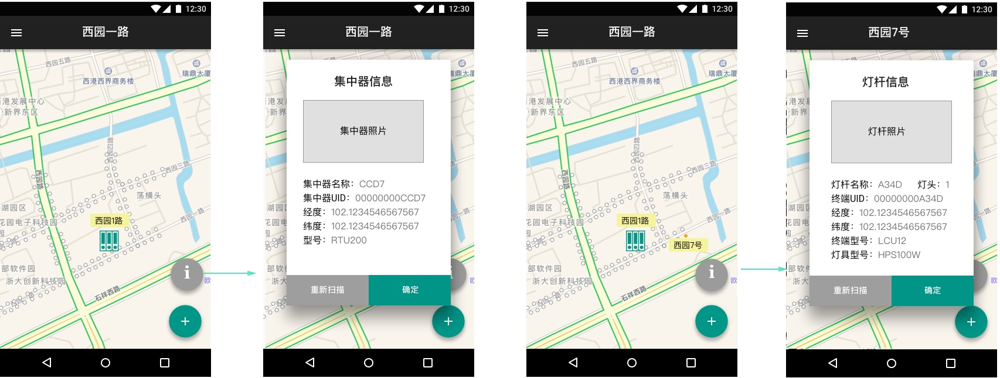

路灯扫描定位
信息与交互设计课程项目：用于工人将定位新的路灯定位到SCCS城市照明智控云系统，进行基于物联网的智能管理
职责
UI设计
时间
2017.3-2017.4
工具
Sketch
系统概述
由浙江方大智控科技有限公司开发的SCCS城市照明智控管理系统是基于物联网技术的云平台，是智慧城市建设的重要组成部分。可对集成各种技术创新的智慧灯杆（包括智慧照明、环境信息采集、应急可视报警等）进行云管理，达到高效管理和节能减排的目的。
对路灯的控制是由项目—集中控制器—单灯控制器的三级结构组成，按照区域分为不同的项目，项目下按照道路分为几个集中控制器，分别控制该道路下的单灯控制器。
需求定义
需求方要求为路灯工人设计一个帮助他们在安装新路灯时进行路灯信息录入的轻量级APP。每个新的路灯上会有含有路灯信息的二维码，路灯工人安装好路灯后，使用该APP扫描二维码，借助手机的GPS定位将新的路灯定位到云平台上，并上传二维码所含有的灯杆信息和现场照片。
功能分析
核心功能为对路灯进行扫描定位，只在特定的场景（安装好路灯后对路灯上的二维码进行扫描定位）时使用，因此不需要多余的其他功能（如to-do list）。所以尽量精简界面的交互，将这个APP定位于一个快速解决问题的小工具。核心流程为：安装路灯——选择添加终端或集中器——扫码——信息确认——拍照——上传信息。
考虑到工人在特殊的环境（比如高速公路的某些区段）下没有网络的状况，设置了离线登陆的功能，在没有网络连接的情况下先把信息保存下来，在登陆后提醒用户上传数据。
原型
*主界面
主界面为直接的地图显示，轻点右下角的加号可以直接选择录入信息的种类并进入信息上传流程，避免过多的流程造成的负担。
*信息录入流程
选择输入信息种类后即可扫码，扫码后信息会以小窗口的形式在地图上显示，并可选择是否重新扫描。确认信息后即可对路灯进行拍照。对照片进行确认后即进行上传流程，以进度条的形式显示在界面上方。每上传完成一个即以橙色高亮显示2秒提示完成。
*抽屉
左上角的抽屉中含有用户信息和一些附加功能。设置了离线登录功能以便于用户在没有连接时使用。左图示正常登录，右图示离线登录。
*历史记录+项目总览

历史记录-用于查看历史和上传离线数据；项目总览—用于定位项目、控制柜和灯杆。
*已录入信息查看
在信息已录入后可以选中控制柜或灯杆所代表的icon，点击此时出现的“i”的icon，即可查看信息。发现信息错误时可以重新进入扫描流程。